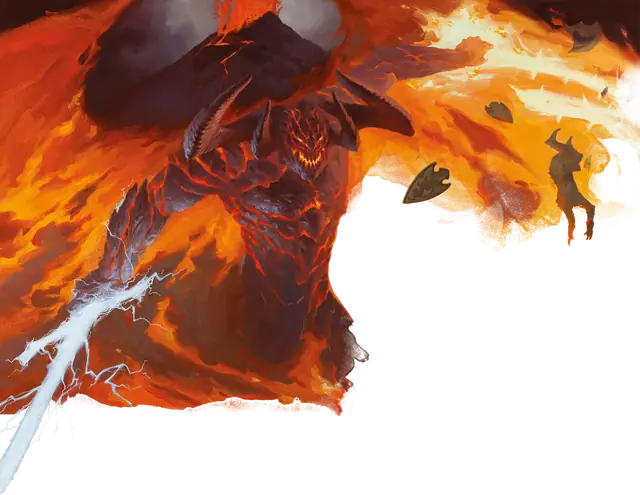

Балор
Balor
Огромное Исчадие (Демон), Хаотичное Злое

Класс Защиты 19 Инициатива +14 (24)
Хиты 287 (23к12 + 138)
Скорость 40 футов, Полёта 80 футов
| мод | спас | ||
|---|---|---|---|
| СИЛ | 26 | +8 | +8 |
| ЛОВ | 15 | +2 | +2 |
| ТЕЛ | 22 | +6 | +12 |
| мод | спас | ||
|---|---|---|---|
| ИНТ | 20 | +5 | +5 |
| МДР | 16 | +3 | +9 |
| ХАР | 22 | +6 | +6 |
Сопротивление урону Холод, Электричество
Иммунитеты Огонь, Яд; Испуганный, Отравленный, Очарованный
Чувства пассивное Восприятие 19, Истинное зрение 120 футов
Языки Бездны, Телепатия 120 фт.
Опасность 19 (22 000 опыта; БВ +6)
Особенности
Предсмертная агония. Когда балор умирает, он взрывается. Спасбросок Ловкости: Сл 20, каждое существо в 30-футовой Эманации, исходящей от балора. Провал: 31 (9к6) урона Огнём плюс 31 (9к6) Силового урона. Успех: Только половина урона. Провал или успех: Если балор умирает вне Бездны, его тело в тот же миг заново возрождается со всеми Хитами в Бездне.
Огненная аура. В конце каждого хода балора все существа в 5-футовой Эманации, исходящей от балора, получают 13 (3к8) урона Огнём.
Легендарное сопротивление (3/день). Если балор проваливает спасбросок, он вместо этого может в нём преуспеть.
Сопротивление магии. Балор совершает с Преимуществом спасброски против заклинаний и прочих магических эффектов.
Действия
Мультиатака. Балор совершает одну атаку Огненным кнутом и одну Молниевым клинком.
Огненный кнут. Бросок рукопашной атаки: +14, досягаемость 30 фт. Попадание: 18 (3к6 + 8) Силового урона плюс 17 (5к6) урона Огнём. Если цель — существо размером не больше Огромного, балор притягивает цель к себе на расстояние вплоть до 25 футов по прямой, и она Опрокидывается.
Молниевый клинок. Бросок рукопашной атаки: +14, досягаемость 10 фт. Попадание: 21 (3к8 + 8) Силового урона плюс 22 (4к10) урона Электричеством, и цель не может совершать Реакции до начала следующего хода балора.
Бонусные действия
Телепортация. Балор телепортирует себя или согласного демона в пределах 10 футов от себя в видимое им незанятое пространство на расстояние до 60 футов.
Бонус мастерства +6
Среда обитания Бездна
Сокровища Оружейные
Балор
Демон всепоглощающей ярости
Балоры воплощают в себе разрушительную ярость и ненависть всего демонического рода.
Эти наводящие ужас громадные крылатые военачальники демонов кипят от гнева, а их бешенство выплёскивается волнами огня от пары грозных орудий: потрескивающего молнией клинка и хлыста, бичующего пламенем. Ярость балора пребывает с ним до самого конца, а после смерти демона исчезает во взрыве, карающем его убийц.
Демонические владыки и злые боги находят способы обуздать гнев этих Исчадий и отправляют их командовать армиями или охранять свои страшные тайны.